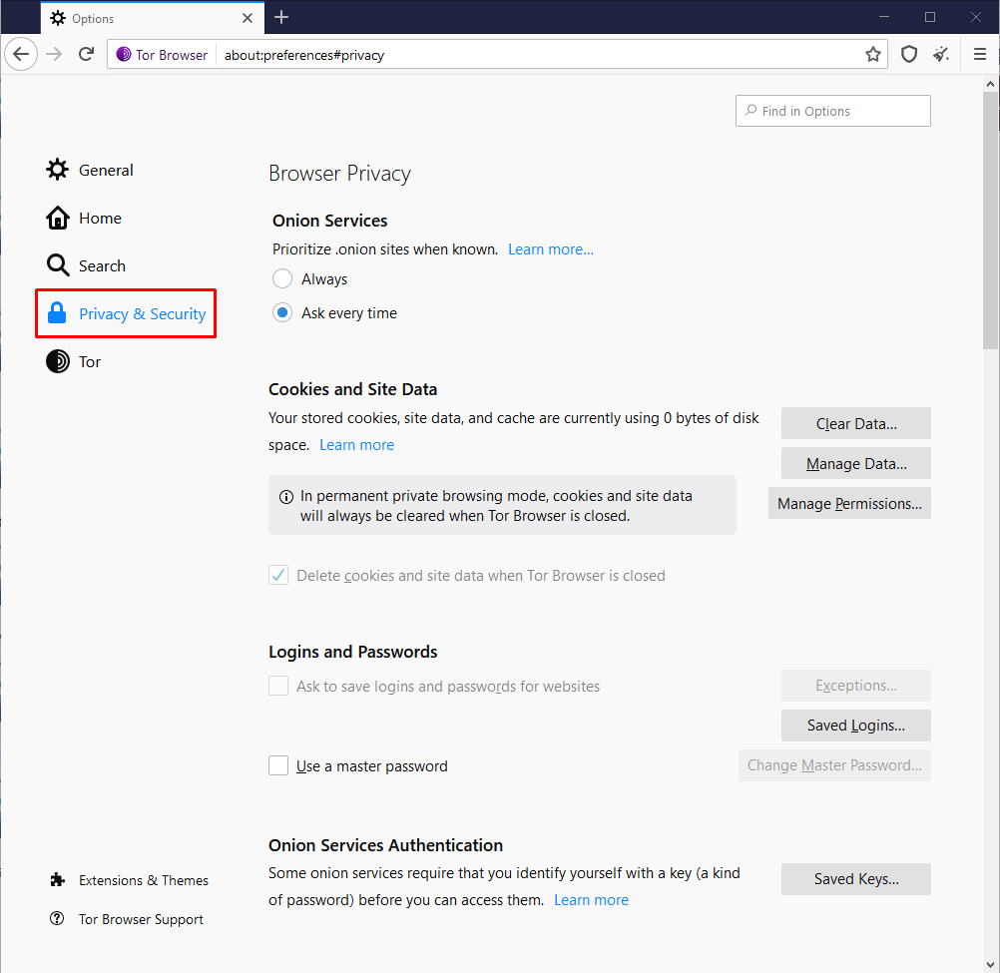

Tor Browser - Tor Tarayıcı
Tor Browser, temel olarak tıpkı Chrome, Opera, Firefox ya da diğer web tarayıcıları gibi internet üzerinde gezinti yapmamıza yardımcı olan bir araçtır. Ancak standart tarayıcılardan farklı olarak tüm internet trafiğini Tor ağı üzerinden yönlendirir. Bu sayede tüm kısıtlamaları atlayarak, daha önce de bahsetmiş olduğumuz "Surface Web" ve Tor ağındaki "Dark Web" olarak geçen gizli servislere güvenli şekilde erişebilmemizi sağlar.
Tor Browser, Firefox tarayıcısının Tor ağı için özelleştirilmesi ile ortaya çıkmıştır. Tor ağına çeşitli işletim sistemleri üzerinden bağlanmak için pratik bir çözümdür. Eğitimi hazırladığım sırada iOS için resmi olarak desteklediği bir tarayıcısı bulunmuyor olsa da Android, Windows, Linux ve Mac için resmi desteğe sahip tarayıcıları mevcuttur.
Tor tarayıcıları, tüm internet trafiğini Tor ağı üzerinden yönlendirmesinin dışında normal tarayıcılardan farklı olarak çeşitli kısıtlama ve güvenlik önlemleri ile birlikte gelir. Yani tam olarak güvenlik ve gizlilik için optimize edilmiştir.
Tarayıcı kullanımına ait detaylara değinmeden önce ilk olarak Tor tarayıcısını nereden ve nasıl indirebileceğimizi öğrenelim.
Tor Browser İndirmek
Tor tarayıcısını indirmek için birden fazla alternatifimiz bulunuyor. Tüm bu alternatifler, erişimin kısıtlı olduğu herhangi bir ağ üzerinden de Tor tarayıcısını güvenli bir biçimde indirebilmemiz için vardır. Şimdi sırasıyla indirme kaynaklarına göz atalım.
Tor Web Sitesi Üzerinden İndirmek
Tor tarayıcısını indirmek için kullanılan en temel ve yaygın yöntem, kendi web sitesi üzerinden sistemimize uygun olan versiyonu indirmektir.
Tarayıcımızı indirmek üzere öncelikle web adresine gidelim. Eğer isterseniz buradan web sitesinin dilini Türkçe olarak seçip yazılanları daha net anlayabilirsiniz. Web sitesi dilini değiştirdikten sonra, "Tor Browser İndir" kısmına tıklayalım.
Açılan sayfada çoklu platformlar için indirme seçenekleri gelmiş oldu. Yine de daha fazla seçenek için "Başka bir dil ya da platform için indirmelere bakın" kısmına tıklayalım.
Burada gördüğünüz gibi hem 32 bit hem de 64 bitlik çoklu platformlar için birden fazla dil seçeneğine sahip indirme bağlantıları yer alıyor. Buradan işletim sisteminize uygun olan sürümü indirmek için bağlantının üstüne tıklamanız yeterli. Bu noktada size önerim eğer şart değilse Türkçe ya da bildiğiniz veya sizinle ilişkilendirilebilecek diğer dillerin paketlerini indirmekten ziyade, çok daha genel kullanıma sahip olan İngilizce kurulum paketini tercih etmenizdir. Böylelikle çok daha geniş kullanıma sahip bir tarayıcı sürümü ile gerçek kimliğinizi çok daha belirsiz kılabilirsiniz. Yine de zorlanacağınızı düşünüyorsanız ya da anonimliğinizin çok da önemli olmadığı kullanım için tercih edecekseniz istediğiniz dil paketini seçebilirsiniz elbette. En azından tarayıcıya alışana kadar kullanmak için de Türkçe dili tercih edilebilir.
Ayrıca indirmiş olduğunuz kurulum dosyasının "imza" yani "signature" dosyasını da "sig" yazan bağlantıya sağ tıklayarak "bağlantıyı farklı kaydet" seçeneği ile mutlaka kaydedin.
Bu dosyayı kurulum aşamasında dosyanın güvenliğini test etmek için kullanıyor olacağız.
Böylelikle ilk indirme alternatifimizi ele almış olduk. Ancak ilk olmasına karşın en fazla engellenen alternatifimiz de bu aslında. Genellikle Tor projesi ile ilgili pek çok web sitesi varsayılan olarak pek çok ağ üzerinde erişime kapalı olabiliyor. Nitekim bu eğitimi takip ettiğiniz sırada, sizler Tor web sitesine erişememiş olabilirsiniz. Bu durumda dilerseniz ikinci alternatif indirme kaynağını kullanabilir ya da herhangi bir VPN üzerinden Tor web sitesini kullanarak indirme işlemini gerçekleştirebilirsiniz. Nitekim ben de bu rehberi hazırlarken web sitesine erişmede sorun yaşadığım için, tarayıcımda kurulu olan basit bir VPN uygulaması üzerinden web sitesine erişerek işlemleri gösterebildim. Yani dilerseniz sizde yalnızca indirme işlemi için tarayıcılara kurulabilen basit VPN eklentilerini kullanabilirsiniz ya da ikinci indirme yöntemini deneyebilirsiniz. Ayrıca yeri gelmişken; tarayıcı üzerinden çalışan bu gibi ücretsiz VPN servislerinin güvenli olmadığını ve sizin pek çok kişisel verilerinizi kaydettiklerini de bilmenizi isterim. Biz sadece gizliliğimizin çok önemli olmadığı indirme işlemi için kullandık. Bunun dışında bu gibi ücretsiz hizmetleri kullanmadan önce kullanım şartlarını okuyarak sizin hakkınızda ne gibi bilgiler topladıklarını öğrenmenizi de tavsiye ederim.
Şimdilik VPN kullanımı bir kenara bırakarak, ikinci alternatif kaynağımızı ele alalım.
Github Üzerinden İndirmek
İlkine oranla çok daha kesintisiz bir erişim olanağı sağlayan bu alternatifimizde, Github üzerinden indirme dosyalarına erişmemiz mümkün.
Öncelikle Tor projesinin Github kaynağına gidelim; https://github.com/TheTorProject/getTorBrowser
Github üzerinde yayınlanmış olan kaynakları indirmek üzere "release" sekmesine tıklayalım. Gördüğünüz gibi indirilebilir tüm dosyalar burada yer alıyor. Buradan sistemimize uygun olan sürümü seçerek indirebiliriz. Ayrıca indirdiğiniz kurulum dosyası ile birlikte ".asc" uzantılı imza dosyasını da indirmeyi unutmayın lütfen.
Daha önce de söylediğim gibi bu dosyayı kurulum aşamasında, indirilen dosyanın güvenliği test etmek için kullanıyor olacağız.
Yakın geçmişte ülkemizde Github'ın da erişime kapatıldığı olmuştu. Yine böyle bir durum yaşanırsa ya da bir şekilde Github üzerinde yer alan bu Tor kurulum dosyalarına erişiminiz kesilirse, VPN ya da bir sonraki e-posta yönetimi kullanarak dosyaları indirebilirsiniz.
Email Üzerinden İndirmek
Eğer herhangi bir şekilde önceki yöntemler ile Tor tarayıcısının indirme kaynaklarına ulaşamazsanız gettor@torproject.org adresine mail atmanız yeterli.
Örneğin ben Windows için Türkçe Tor tarayıcısı indirmek istersem, mesaj olarak "windows tr" ifadesini yazarak gettor@torproject.org adresine mail atmam gerekiyor.
Gördüğünüz gibi kısa bir süre sonra yanıt olarak, pek çok alternatif yolu içeren indirme bağlantılarını almış oldum.
Şu ana kadar anlattığım tüm bu yöntemler ve adresler zaman içinde farklı sebeplerle değişiklik gösterebilir. Böyle bir durumda yapmanız gereken, Tor projesinin web sitesi üzerindeki indirme rehberine göz atmaktır. Zaten Türkçe desteği de olduğu için rahatlıkla pek çok dokümanı ve rehberi okuyabilirsiniz. Ayrıca sorun yaşadığınız noktada bana soru-cevap alanından kurs ile ilgili istediğiniz zaman soru sorabilirsiniz.
Sadece basit bir indirme işlemini neden bu kadar uzun uzadıya açıkladığımı merak edenleriniz, hatta eleştirenleriniz olabilir. Bu durumun nedeni Tor projesinin yapısında saklı. Tor projesi, yapısı gereği her zaman sansürlerle mücadele ettiği için her daim alternatif yollar oluşturması gerekmiş. Ben de sizlerin her türlü durumda kaynaklara erişim için alternatif yolları bilmenizin faydalı olacağını düşündüğüm için bu kadar uzun açıklamış oldum.
En nihayetinde kurulum işlemi için indirmemiz gereken dosyaları nasıl edinebileceğimizi, alternatif yollar da dahil olmak üzere tek tek ele almış olduk. Kurulum işlemine geçmeden önce yapmamız gerek son bir işlem daha var, o da indirmiş olduğumuz dosyaları doğrulamak.
Peki ama dosyaları neden doğrulamamız gerekiyor ? Zaten kullandığımız kaynaklar Tor projesinin ana kaynakları değil miydi ?
Sorumuzun cevabını bir sonraki bölümde verelim.
Kurulum Dosyasını Doğrulamak
Kurulum dosyalarını nereden indirmiş olursak olalım, indirime işlemi öncesinde ya da indirme işlemi sırasında kurulum dosyalarının içeriği saldırganlar tarafından değiştirilmiş olabilir.
Örneğin Tor projesinin web sitesi üzerinden indirdiğimiz bir dosya, web sitesinin hacklenmesi ile saldırganlar tarafından zararlı bir sürümü ile değiştirilmiş olabilir. Böyle bir ihtimal pek çok kişiye düşük bir olasılık gibi gelse de, 2016 yılında Linux Mint sunucularının hacklenerek .iso dosyalarının zararlı dosyalar ile değiştirildiğini ve pek çok kişinin de zararlı Mint sürümlerini indirip kurduğunu hatırlatma k isterim. Kaynak için göz atabilirsiniz.
Ayrıca doğrudan indirme kaynağı hacklenmiş olmasa bile bizim dosyayı indirme sürecimizdeki herhangi bir anda, aradaki bağlantıyı kontrol eden saldırganlar tarafından dosyanın zararlı sürümü ile değiştirilebilme olasılığı da bulunuyor.
Bu ve bunun gibi senaryolara karşı alınabilecek en kesin çözüm, indirilmiş olan dosyanın doğrulanmasıdır.
Doğrulama işlemi için, Tor projesinin geliştiricileri tarafından yayınlanmış dijital imza ile mevcut dosyamızın imzasını karşılaştırmamız gerekiyor.
Dijital imzalar yalnızca geliştiriciler tarafından, programın ilgili sürümüne özel olarak atanmış olan benzersiz imzalardır. Program içeriğinde yapılan en ufak bir değişiklik dahi bu imzanın bozulmasına neden olacağı için programın değiştirilip değiştirilmediğini imza üzerinden kolaylıkla test edebiliyoruz.
Kurulum dosyasını indirdiğimiz sırada, kurulum dosyasına ek olarak ".asc" uzantılı imza dosyalarını indirmemiz gerektiğinden bahsetmiştim hatırlarsanız. İşte bu ".asc" dosyaları aslında PGP şifreleme protokolü ile oluşturulmuş imza dosyalarıdır. Bu dosyaların içerisinde benzersiz olarak oluşturulmuş anahtar yer alır. Bizler bu dosyalar sayesinde programın içeriğinin değiştirip değiştirilmediğini test edebiliyoruz. Eğer bu imza dosyalarını indirmediyseniz, tekrar indirme kaynağına giderek indirdiğiniz sürüm ile aynı adı taşıyan imza dosyalarını temin edebilirsiniz. Anlatım sırasında kullandığım terimler size yabancı ve anlaşılmaz geliyorsa kesinlikle endişelenmeyin. Eğitimin devamında "Şifreleme" bölümüne geldiğimizde bu imza biçiminden ayrıca bahsediyor olacağız. Şimdilik sadece doğrulama için kullandığımız kadarlık kısmına odaklanmanız yeterli. Bu işlem oldukça basit olduğunda, rehberi dikkatli bir biçimde takip ederseniz hiç bir sorun yaşamazsınız.
Kurulum dosyası ve imza dosyasını temin ettikten sonra, kurulum dosyasını test etmek için ayrıca bir araç kullanmamız gerekiyor. Bu araç, kullanılan işletim sistemine göre farklılık gösterse de temelde hepsinin işlevi ve kullanımları aynıdır.
Örneğin Windows üzerinde imzayı doğrulamak için Gpg4win aracını kullanacağız. MacOS üzerinde ise GPG Suite isimli araç ile imza doğrulaması yapacağız. Son olarak Linux üzerinde ise halihazırda yüklü bulunan bir doğrulama aracını kullanarak imzamızı test edeceğiz.
Doğrulama ve kurulum işlemlerini tek tek işletim sistemine özel olarak ele alıyor olacağız. Yani kullanacağınız işletim sistemi dışındaki kurulum anlatımlarını takip etmeseniz de olur. Zaten her birinde aynı işlemi mevcut işletim sisteminde nasıl uygulayabileceğimiz ele alıyor olacağız.
Lafı daha fazla uzatmadan anlatımlara Tor Browser kurulum dosyasını "Windows" sistemi üzerinde nasıl doğrulayarak kurabileceğimizi ele alarak başlayalım.
Tor Browser Doğrulaması Ve Kurulumu (Windows)
Kurulum işleminden önce indirmiş olduğumuz kurulum paketinin içeriğini doğrulamak için imza kontrolümüzü gerçekleştirelim.
Windows üzerinde imza kontrolünü sağlamak için daha önce de belirttiğimiz şekilde "Gpg4win" aracını kullanacağımız için öncelikle aracımızı edinmemiz gerekiyor.
"Gpg4win" aracını indirmek üzere https://gpg4win.org web adresini ziyaret ederek indirme sayfasını açalım. Bağışta bulunmak isterseniz buradan istediğiniz miktarı belirtebilirsiniz,. Eğer bağış yapmayacaksanız "0" miktarını seçip indirme butonuna basın.
İndirme işleminin ardından aracımızı hızlıca kuralım. Kurulum işlemi sırasında varsayılan ayarları değiştirmeden adımları tamamlayabiliriz. Kurulum işlemi tamamlandığında sistemi yeniden başlatmamızı istiyor. Yeniden başlatmamız şart değil o yüzden daha sonra başlatacağımız seçeneği seçerek kurulum işlemini bitirelim. İşte aracımızın kurulumu bu kadar kolay.
Aracımızı kurduktan sonra doğrulama işleminde eşleştirme yapabilmemiz için öncelikle geliştirici anahtarını güvenli kaynaktan içeri aktarmamız gerekiyor. Bunun için Windows üzerideki komut istemi olan cmd aracını çalıştırarak aşağıdaki komutu girelim.
gpg --auto-key-locate nodefault,wkd --locate-keys torBrowser@torproject.org
Böylelikle Tor geliştiricilerinin doğrulama anahtarını, güvenli adres üzerinden edinmiş olduk.
Bu işlemin ardından, indirdiğimiz kurulum ve imza dosyalarının bulunduğu konumları da belirterek aşağıdaki kullanım örneğine benzer şekilde komutumuzu girelim. Benim dosyalarım indirilenler konumunda yer aldığı için komutu aşağıdaki şekilde giriyorum. Komutu girerken öncelikle imza dosyasını belirtmemiz, yani komut sırasına uymamız önemli.
gpg --verify Downloads\TorBrowser-install-XYZ_en-US.exe.asc Downloads\TorBrowser-install-XYZ_en-US.exe
Ve sonuç olarak aldığımız çıktı içeri aktardığımız güvenli tor anahtarı ile eşleşerek, dosyamızın Tor geliştiricileri tarafından imzalanmış ve değiştirilmemiş dosya olduğunu kanıtlamış oldu. Eğer dosyamız değiştirilmiş bir dosya olsaydı, bu imza eşleşmesi sağlanmayacağı için bu çıktıyı elde edemeyecektik.
Artık dosyamızı doğruladığımıza göre, kurulum dosyasına çift tıklayarak Tor Browser kurulumunu başlatabiliriz.
Açılan pencereden kurulum işlemini hangi dilde yapacağımızı seçip devam edelim. Tor tarayıcısı kurulduğunda pek çok programdan farklı olarak, sistemin her yerine dağılmaz. Tek bir dosya konumunda tüm dosyalarını muhafaza eder. Açılan pencereden dosyanın nerede tutulacağını seçebiliriz. Ben varsayılanı değiştirmeyerek masaüstüne kaydolmasını sağlıyorum. Siz dilerseniz farklı bir konum belirtebilirsiniz. Kısa bir süre içinde kurulum işlemi tamamlanıyor. Eğer başlat menüsüne ve masaüstüne kısayol oluşturulsun isterseniz seçili işareti kaldırmadan bitir diyebilirsiniz. Ben işareti kaldırıp bitir diyerek programın açılmasını sağlıyorum. Açılan pencereden tarayıcının Tor ağına bağlanması için "Connect" butonuna basıyorum. Kısa bir süre sonra bağlantı sağlanarak tarayıcımız sorunsuzca açılmış oluyor.
Ayrıca kontrol ettiğimizde, tarayıcımızın masaüstü konumunda "Tor Browser" isimli klasörün içerisine kurulmuş olduğunu da teyit edebiliyoruz. Böylelikle Tor tarayıcımızı güvenli bir biçimde indirip kurmuş olduk. İlerleyen bölümlerde kullanımına ayrıntılı olarak değiniyor olacağız.
Son olarak doğrulama işlemini gerçekleştirmenin zorunlu olmadığını ancak güvenliğimiz açısından son derece önemli bir detay olduğunu da belirtmek isterim. Üstelik uygulama noktasında hiç bir zorluk olmadığından, kurulum işleminden önce doğrulama yapmanızı şiddetle tavsiye ederim.
Bir sonraki derste aynı doğrulama ve kurulum işlemini bu kez Mac işletim sistemi için gerçekleştireceğiz. Yani MacOS kullanmıyorsanız bir sonraki dersi doğrudan geçebilirsiniz.
Tor Browser Doğrulaması Ve Kurulumu (MacOS)
Kurulumu yapmadan önce kurulum dosyasını doğrulamak için GPGSuite aracını kullanacağız. Aracımızı indirmek üzere https://gpgtools.org/ adresine giderek "Download" butonuna tıklayalım.
İndirme işleminin ardından dosyamızı çalıştırarak açılan pencerede "Install" kısmına tıklayalım. Kurulum için gereken tüm onayları vererek kurulum işlemini kısa sürede tamamlayalım.
Doğrulama aracını da kurduğumuza göre artık terminal ekranını açarak imza doğrulamasını gerçekleştirebiliriz. Eğer terminal ekranını nasıl açacağınızı bilmiyorsanız, uygulamalar kısmından ya da arama çubuğundan "Terminal" şeklinde aratarak ulaşabilirsiniz.
Açılan terminal ekranına aşağıdaki komutu girerek, doğrulama yapabilmemizi sağlayacak olan geliştirici anahtarını güvenli biçimde içeri aktarmamız gerekiyor.
gpg --auto-key-locate nodefault,wkd --locate-keys torBrowser@torproject.org
Girdiğimiz komutun ardından anahtarın içeri aktarıldığını bildiren çıktıları alıyoruz. Anahtarı içeri aktardıktan sonra doğrulamak istediğimiz kurulum dosyasını ve doğrulama imza dosyasını ilk önce anahtar daha sonra kurulum dosyası olacak şekilde belirterek doğrulama işlemini gerçekleştirelim.
gpg -verify ~/Downloads/TorBrowser-XYZ.dmg.asc ~/Downloads/TorBrowser-XYZ.dmg
Ve sonuç olarak aldığımız çıktı içeri aktardığımız güvenli tor anahtarı ile eşleşerek, dosyamızın Tor geliştiricileri tarafından imzalanmış ve değiştirilmemiş dosya olduğunu kanıtlamış oldu. Eğer dosyamız değiştirilmiş bir dosya olsaydı, bu imza eşleşmesi sağlanmayacağı için bu çıktıyı elde edemeyecektik.
Artık dosyamızı da doğruladığımıza göre kurulum dosyasına çift tıklayarak Tor tarayıcı kurulumunu başlatabiliriz.
Kurulum işlemi için Tor uygulamasının simgesini "Applications/Uygulamalar" simgesinin üstüne taşıyoruz.
Taşıma işlemi bittiğinde Tor tarayıcısı kullanıma hazır oluyor. Uygulamalar bölümünden tarayıcı simgesine tıklayarak sorunsuzca çalıştırabiliyoruz. Açılan pencereden tarayıcının Tor ağına bağlanması için "Connect" butonuna basıyorum. Kısa bir süre sonra bağlantı sağlanarak tarayıcımız sorunsuzca açılmış oluyor. Böylelikle oldukça kolay bir biçimde Tor tarayıcısının kurulumunu gerçekleştirmiş olduk. İlerleyen bölümlerde de kullanımına ayrıntılı olarak değiniyor olacağız.
Son olarak doğrulama işlemini gerçekleştirmenin zorunlu olmadığını ancak güvenliğimiz açısından son derece önemli bir detay olduğunu da belirtmek isterim. Üstelik uygulama noktasında hiç bir zorluk olmadığından, kurulum işleminden önce doğrulama yapmanızı şiddetle tavsiye ederim. Bir sonraki derste aynı doğrulama ve kurulum işlemini bu kez Linux işletim sistemi için gerçekleştiriyor olacağız. Eğer Linux kullanmıyorsanız bir sonraki dersi doğrudan geçebilirsiniz.
Tor Browser Kurulumu (Linux)
Dosya doğrulama işlemi için diğer işletim sistemlerinde olduğu gibi haricen bir uygulama kurmamıza gerek yok. İstisnalar hariç genellikle çoğu Linux dağıtımı, içerisinde GPG doğrulama aracı ile birlikte geliyor. Eğer sizin kullanmakta olduğunuz Linux sisteminde doğrulama aracı bulunmuyorsa bana soru cevap kısmından ulaşabilirsiniz.
Doğrulama işlemi için ilk olarak geliştirici anahtarını güvenli şekilde içeri aktarmak üzere aşağıdaki komutu, komut satırımıza girelim. Eğer Linux kullanmanıza karşın daha önce komut satırını hiç açmadıysanız, "komut satırı" ya da "terminal" şeklinde aratarak ya da uygulamalar listesinden bularak açabilirsiniz. Komutumuzu girip geliştirici anahtarını edinelim.
gpg --auto-key-locate nodefault,wkd --locate-keys torBrowser@torproject.org
Eğer yukarıdaki komut doğru şekilde çalışmazsa, yani geliştirici anahtarını içeri aktaramazsanız bir de aşağıdaki komutu deneyin lütfen.
curl -s https://openpgpkey.torproject.org/.well-known/openpgpkey/torproject.org/hu/kounek7zrdx745qydx6p59t9mqjpuhdf |gpg --import -
Anahtarı içeri aktardıktan sonra kurulum dosyasını doğrulamak üzere imza dosyası başta olacak şekilde dosya konumları ile birlikte aşağıdaki örnekte olduğu gibi komutumuzu girelim.
gpg -verify ~/Downloads/Tor-Browser-linuxXYZ.tar.xz.asc ~/Downloads/Tor-Browser-linuxXYZ.tar.xz
Doğrulama işlemi sonucunda aldığımız çıktı, dosyamızın Tor geliştiricileri tarafından imzalanmış ve değiştirilmemiş dosya olduğunu kanıtlamış oldu. Eğer dosya içeriği değiştirilmiş olsaydı, bu imza eşleşmesi sağlanmayacağı için bu çıktıyı elde edemeyecektik.
Artık dosyamızı doğruladığımıza göre tarayıcımızı arşiv dosyasından istediğimiz bir konuma çıkartarak kullanmaya başlayabiliriz. Tor tarayıcısı Linux üzerinde kullanılırken kuruluma ihtiyaç duymadan kurulu şekilde geliyor. Bizim tek yapmamız gereken bu dosyayı nerede barındırmak istediğimize karar vermek. Ben arşiv içeriğini masaüstü konumuma çıkarıyorum. Tarayıcımı çalıştırmak için de çıkarmış olduğum dosya konumuna giderek simgesine çift tıklıyorum. Açılan pencereden tarayıcının Tor ağına bağlanması için "Connect" butonuna basıyorum.
Kısa bir süre sonra bağlantı sağlanarak tarayıcımız sorunsuzca açılmış oluyor. Böylelikle Tor tarayıcımızı Linux sistemi üzerine güvenli bir biçimde indirip kurmuş olduk. İlerleyen bölümlerde de kullanımına ayrıntılı olarak değiniyor olacağız.
Son olarak doğrulama işlemini gerçekleştirmenin zorunlu olmadığını ancak güvenliğimiz açısından son derece önemli bir detay olduğunu da belirtmek isterim. Üstelik uygulama noktasında hiç bir zorluk olmadığından, kurulum işleminden önce doğrulama yapmanızı şiddetle tavsiye ederim.
Android Tor Browser Kurulumu
Masaüstü cihazlarımıza erişimimiz bulunmuyorken, Android cihazımız üzerinden Tor ağına güvenli şekilde erişmek için Android platformuna özel olarak geliştirilmiş olan Tor tarayıcısını kullanabiliriz. Tarayıcıyı edinmek üzere PlayStore üzerinde "Tor Browser" şeklinde arama yapmamız yeterli. Seçenekler arasından doğru olan uygulamayı seçtiğimizden emin olduktan sonra, indirip kurulmasını bekleyelim.
Kurulum tamamlandıktan sonra uygulamayı açarak "Bağlan" butonuna basıp, tarayıcının tor ağına bağlanmasını bekleyelim. Bağlantı hazır olduğunda tarayıcı ekranımız açılıyor. Bağlantıyı test etmek için "check.torproject.org" adresini ziyaret edelim. Ziyaretimiz sonucunda bağlantımızın başarılı olduğunu yani Tor ağı üzerinden sağlandığını da teyit etmiş oluyoruz. Sizler de gerektiğinde Android cihazınız ile Tor ağı üzerinden gezinti yapabilmek için bu uygulamayı kullanabilirsiniz.
iOS Tor Browser Hakkında
iOS için resmi olarak geliştirilen bir sürüm bulunmasa da alternatif olarak kullanabileceğiniz birkaç uygulama bulunuyor. Ancak yine de zorunlu olmadığınız ve güvenliğin çok önemli olmadığı durumlar dışında kullanmanızı pek tavsiye etmiyorum. Ben güvenli bulmadığım için alternatif iOS uygulamalarını ve kullanımlarını bu kısımda ele almayacağım. Sadece gerçekten ihtiyacınız varsa App Store üzerinden araştırarak Tor ağına bağlanmanızı sağlayacak ancak güvenlik ve gizlilik konusunda tekin olmayan tarayıcıları kullanabilirsiniz. Eğer Tor projesinin geliştiricileri kararlı bir iOS uygulaması çıkarırlarsa, zaten bu kısıma eklemiş olacağım.
Tor Browser Kullanımı
Tor ağının yapısından bahsederken, Tor ağını kullanabileceğimiz yöntemleri de sıralamıştık hatırlarsanız. Hatta bu yöntemler içerisinde Tor Browser kullanımının en iyi yol olmadığından da bahsetmiştik. Tor Browser kullanımının en iyi yöntem olmamasının nedeni, tarayıcıyı kullandığımız işletim sisteminin tam olarak güvenlik odaklı olmamasıdır. Yani aslında bizler eğitimin devamında daha güvenli olarak kabul ettiğimiz diğer yöntemlerde de Tor tarayıcısını kullanıyor olacağız. Fakat güvenli olarak kabul ettiğimiz yöntemlerde Tor tarayıcısını kullanacağımız işletim sistemleri tam olarak gizlilik için yapılandırıldığından, herhangi bir işletim sisteminden çok daha güvenli bir ortam sağlıyor olacaklar.
Yani aslında Tor tarayıcısını Android, Windows, MacOS ya da standart bir Linux dağıtımında kullanmak tamamen verimsiz bir yol olmamakla birlikte güvenlik ve gizlilik için en iyi yol da sayılmaz. İşletim sistemlerinde ya da işletim sistemi üzerinde yer alan yazılımlarda meydana gelebilecek zafiyetler, Tor tarayıcısının sağladığı anonimlik ve gizlilik özelliklerinin anlamsızlaşmasına neden olabilir. Kısacası Tor tarayıcısını standart işletim sistemlerinde kullanmak pratiktir ancak tek başına güvenlik için yetersizdir. Lafı daha fazla uzatmadan Tor tarayıcısının kullanımından ve çeşitli ayarlarından bahsederek anlatıma devam edelim.
Farklı işletim sistemleri için kurulum ve doğrulama işlemleri biraz farklılık gösterse de kurulduktan sonra Tor Browser kullanımı tüm sistemler için oldukça benzer şekildedir. Yani buradaki anlatımları tüm sistem kullanıcıları rahatlıkla takip edebilir. Ben anlatımları şimdilik Windows üzerinden gerçekleştireceğim, siz dilediğiniz bir işletim sistemi üzerinden takip edebilirsiniz.
Tor tarayıcısını açmak için uygulamanın üzerine çift tıklıyorum.
Gördüğünüz gibi standart Firefox tarayıcısından pek de farklı görünmeyen basit bir tarayıcı arayüzü bizi karşılamış oldu. Şimdi Tor ağına doğru şekilde bağlı olup olmadığımızı test etmek için "check.torproject.org" adresine giderek bağlantımızı kontrol edelim.
Açılan sayfada, bağlantımızın olması gerektiği gibi Tor ağı üzerinden yönlendirildiğini onay ifadesi ile teyit edebiliyoruz. Bu noktada eğer sizler bu onay ifadesi ile karşılaşmadıysanız, Tor ağının engellendiği bir internet bağlantısına sahip olabilirsiniz. Bu gibi durumlarda, engeli aşmak için Tor köprü bağlantısını ya da VPN kullanımını tercih edebilirsiniz. VPN kullanımına ilerleyen kısımlarda değineceğiz şimdilik Tor köprü bağlantısından bahsederek anlatımlara devam edelim. Ayrıca bu eğitimi takip ettiğiniz sırada Tor ağına sorunsuzca erişebiliyor olsanız dahi köprü bağlantısının nasıl kullanıldığını öğrenmeniz, olası bir engel ile karşılaştığınız durumlarda yararınıza olacaktır. Yani Tor bağlantınız sorunsuz da olsa müfredat düzeninden ayrılmadan eğitime devam edin lütfen.
Köprü Bağlantısı Sağlamak
Eğitimin başlarında Tor ağının çalışma yapısından bahsederken, Tor ağında yer alan sunucuların listesinin herkese açık şekilde yayınlandığından ve bu nedenle Tor sunucularının kolaylıkla engellenebileceğinden bahsetmiştik. Tor ağını engelleme işini devlet, servis sağlayıcınız ya da ağ yöneticiniz gibi otoriteler, açık olarak yayınlanan bu sunucu listesi üzerinden kolaylıkla yapabilir. Engellemesi kolay olduğu için Tor ağının engellendiği durumlar ile sıklıkla karşılaşmanız olasıdır.
Bu gibi durumlarda engeli aşmak için Tor projesinin sağladığı köprü bağlantılarını kullanabiliriz. Köprü yönlendiricilerinin listesi gizli olarak tutulduğu için tüm köprü bağlantıları tek seferde engellenemiyor, dolayısı ile sunucular engellenmiş dahi olsa köprü bağlantısı üzerinden Tor ağına erişim sağlanabiliyor.
Köprü bağlantısını kurmak için öncelikle https://bridges.torproject.org/options web sitesini ziyaret ederek yeni bir köprü bağlantı adresi edinmemiz gerekiyor.
Web sitesine ulaştıktan sonra obfs4 seçeneğini seçerek "köprüleri al" butonun tıklayıp, güvenlik kodunu girelim.

Güvenlik kodunu girdikten sonra karşımıza köprü bağlantısı için gereken adres bilgisi gelmiş oluyor.
Eğer bu şekilde köprü adreslerini elde edemediyseniz herhangi bir VPN servisini kullanarak da web sitesine erişmeniz mümkündür. Ayrıca VPN seçeneğine alternatif olarak Tor tarayıcısı içerisinden de bu adresleri edinebilirsiniz. Yeri geldiğinde Tor tarayıcısı içerisinden nasıl köprü adresleri edinebileceğimizi görmüş olacağız.
Şimdi köprü bağlantısı için gereken ayarlamaları yapmak üzere tarayıcımızın sağ tarafında yer alan üç çizgili ikona tıklayıp menüyü açalım. Açılan menüden "Seçenekler" kısmına tıklayalım. Seçenekler penceresi açıldıktan sonra sol tarafta yer alan "Tor" sekmesine tıklayalım. İşte köprü bağlantısı için gereken ayarlamaları buradan yapacağız. Bir köprü kullanılsın seçeneği aktifken, eğer elimizde köprü adresleri varsa "Bir köprü adresi yazın" seçeneğine tıklayıp elimizdeki köprü adresini açılan ilgili alana ekleyelim.
Böylelikle Tor ağı belirtmiş olduğumuz köprü bağlantısı üzerinden sağlanıyor olacak. Köprü bağlantısının sağlanıp sağlanmadığını test etmek için yine "check.torproject.org" adresine gidelim ve bu adrese bağlanırken kullanılan düğümlere göz atalım.
Gördüğünüz gibi ilk sırada köprü bağlantısı bilgisi yer alıyor. Bu da demek oluyor ki köprü bağlantısını başarılı bir şekilde sağlayabildik. Ayrıca eğer elimizde köprü bağlantısı için adresler yoksa yine köprüler kısmından "Hazır köprüler seçilsin" ya da "torproject.org Üzerinden Köprü İstensin" seçeneklerini de kullanabiliriz. Sırasıyla her iki seçeneği de denediğimde her ikisinin de köprü bağlantısını sorunsuzca sağladığını görüyorum. Sizler de tüm bu yöntemleri kullanarak Tor ağının sansürlendiği durumları kolayca aşabilirsiniz.
Eğer köprü bağlantısını kullanmanıza rağmen yine de erişim noktasında sorun yaşıyorsanız, muhtemelen ağ trafiğinizi derinlemesine analiz ederek Tor ağına eriştiğinizi saptayan bir sansür mekanizması ile karşı karşıyasınızdır. Bu duruma basit bir çözüm olarak VPN üzerinden Tor ağını kullanmayı tercih edebilirsiniz. Üstelik VPN kullanımı, engeli aşmanın yanı sıra size çok daha fazla güvenlik önlemi sağlayacaktır.
Eğer Tor ağına erişim engeliniz bulunmuyorsa, köprü bağlantısı kullanmanız internet hızınızı daha da yavaşlatacağı ve size ekstra güvenlik sağlamayacağı için mantıklı olmayacaktır. Lütfen unutmayın köprü bağlantısının amacı sadece sansürü aşmaktır, ekstra güvenlik sağlamak değildir. Buna karşın kimi durumlarda Tor ağına erişim engeliniz bulunmuyor olsa da VPN kullanmak isteyebilirsiniz. Nedenini daha iyi anlamak adına VPN üzerinden Tor bağlantısını ele alarak VPN kullanımının Tor ağı üzerindeki etkilerini açıklayalım.
VPN üzerinden TOR
Tor ağı üzerinden internete erişmek istediğimizde, bizim için atanan ilk Tor düğümü ile bizim aramızdaki trafik gözlemciler tarafından izlenebilir. Eğer bağlantı kurduğumuz web sitesinin SSL şifreleme katmanı yani "https" şeklinde görülen şifreli bağlantısı yoksa, web sitesi ile aramızdaki trafik şifrelenmeyeceği için gözlemciler tarafından takip edilebilir. Eğer iletişim kurduğumuz web sitesi SSL sertifikasına sahip ise gözlemci aradaki bağlantıyı izlese dahi içerik hakkında bilgi sahibi olamaz, sadece bizim Tor ağına eriştiğimizi görebilir.
VPN üzerinden Tor ağına bağlandığımızda internet erişimimiz aşağıdaki şekilde gözükür.
Bilgisayarımız -> VPN -> Tor -> İnternet
VPN üzerinden Tor ağına bağlanmanın avantajları;
- İnternet servis sağlayıcınız ya da ağınızdaki herhangi bir gözlemci sizin Tor ağına bağlandığınızı göremez. Sadece VPN bağlantısı kurduğunuzu görür. VPN kullanımı Tor ağına oranla çok daha yaygın olduğundan, bu durum internet trafiğimiz hakkında nispeten daha az şüphe oluşturur.
- Giriş düğümü ile aranızdaki iletişim VPN tarafından şifreleneceği için ağdaki gözlemciler ya da kötü niyetli giriş düğümleri gizliliğinizi ihlal edemezler.
- Tor giriş düğümü sizin gerçek ip adresiniz yerine kullandığınız VPN servisinin ip adresini göreceği için, ilk düğüm kötü niyetli olsa dahi gerçek ip adresinizi gizlemiş olursunuz. Ancak bu noktada gerçek bir anonimlik için VPN servisinizin de log tutmuyor olması gerekir. Aksi halde sizin gerçek ip adresiniz ile VPN servisinin ip adresi ilişkilendirilerek anonimliğiniz ihlal edilebilir.
Bu avantajlı özelliklere ek olarak VPN üzerinden Tor ağına bağlanırken yaşadığımız dezavantajlı durumlar da mevcuttur;
- VPN servisiniz sizin gerçek ip adresinizi bilir. Eğer log tutuyorsa ya da herhangi bir nedenden ötürü güvenilmez bir servis ise sizin gerçek kimliğinizi ele verebilir. Bu noktada güvenilir servis seçmek çok önemlidir.
- Eğer bağlandığınız web adresi şifreli koruma sunan SSL koruması içermiyorsa, kötü niyetli çıkış düğümleri web sitesinin size yanıt olarak gönderdiği verileri okuyabilir. Her ne kadar sizin gerçek ip adresiniz ile ilişkilendirilmese de verilerinizin yani gizliliğinizin çıkış düğümü tarafından ihlal edilme ihtimali vardır. Çünkü VPN yalnızca bizden gönderilen verileri ilk düğüme ulaştırırken şifreler, web sitesinin gönderdiği veriler çıkış düğümüne ulaşırken VPN tarafından şifrelenemez. Böyle bir durumda çıkış düğümü kötü niyetli ise web sitesinden gönderilen yanıtı okuyarak bizim gizliliğimizi ihlal edebilir. Ancak bu SSL sertifikası yani HTTPS şeklinde gözüken güvenli bağlantı sunmayan her site için geçerlidir. Yani aslında tek başına VPN kullanımın dezavantajı da sayılmaz. Ben sadece VPN kullanımı ile HTTPS olmayan adresleri ziyaret etmenin de gizliliğimizi tehlikeye atabileceğini belirmek için dezavantaj olarak ekledim. Bu duruma tek çözüm, kişilerin şifreleme sertifikası sunmayan web siteleri ile aralarında gerçekleşen veri trafiğinin içeriğine dikkat etmeleridir.
- Tor ağının yavaşlığına ek olarak kullandığınız VPN hizmetine de bağlı olarak, bir miktar daha yavaş bir internet hızınız olur. Ancak getirdiği güvenlik düşünüldüğünde bu büyük bir kayıp sayılmaz.
VPN seçerken dikkat etmemiz gerekenler;
VPN üzerinden Tor ağını kullanırken dikkat etmeniz gereken yegane öncelikler; kesintisiz hizmet sağlayan, asla log tutmayan ve ödemeleri anonim şekilde yapabileceğimiz VPN servislerini tercih etmektir. Bunlar neden önemli diyecek olursanız;
Biz Tor ağına bağlıyken VPN hizmetinde kesinti olursa ilk düğüm ile aramızdaki şifreli bağlantı kesileceği için hem gönderilen paket hem de Tor ağına bağlı olduğumuzun bilgisi gözlemciler tarafından saptanabilir. Ayrıca ilk düğüm olan giriş düğümü, bizim gerçek ip adresimizi de kesinti sırasında öğrenebilir.
Eğer VPN servisi log(kayıt) tutuyorsa, yaptığınız tüm faaliyetlerin çıkış noktası VPN servisiniz tarafından bilineceği için, aldığınız tüm güvenlik ve gizlilik önlemleri boşa çıkacaktır. Log tutması demek sizin tüm internet kaydınızın sizin kimliğiniz ile ilişkilendirilmesi demek oluyor. Böyle bir durumda Tor ağını kullanıyor olmanızın pek de bir anlamı kalmaz.
VPN servisi için ödeme yaparken bütüncül anonimliğinizi korumak adına kripto para ile ödeme yapmanız oldukça önemlidir. Böylelikle sizin gerçek ip adresinizin önünde duran VPN servisinin ip adresi araştırıldığında, sizin gerçek kimliğiniz ile doğrudan ilişkilendirilemez. Eğitim devamında kripto paraların bizlere nasıl anonimlik kazandırdığından ayrıca bahsediyor olacağız.
Bu noktada en ideal VPN servisinin hangisi olacağına kendiniz karar vermek durumundasınız. Yine de şahsi deneyimlerime göre "Express VPN" kullanmanızı tavsiye edebilirim. Tavsiye etme nedenim; bağımsız kuruluşlar tarafından log tutmadığının kanıtlanmış olması ve VPN bağlantısı koptuğu anda interneti keserek gerçek ip adresimizin sızmasını engelliyor olmasıdır. Ödeme işlemi sırasında kripto para olan "bitcoin" kullanabiliyor ve ayrıca bir ay boyunca servisi deneyerek memnun kalmamanız halinde para iadesi alabiliyorsunuz.
Bana göre bu servis ideal olsa da elbette alternatif servislere de göz atıp kendi kararınızı kendiniz verebilirsiniz. Ayrıca burada açıkladıklarım kesinlikle servisin reklamı değildir. Tamamen öneri amaçlı kişisel fikrimi paylaşmak için belirttiğim bir servistir. Nitekim fark edebileceğiniz gibi size herhangi bir kupon ya da bağlantı bilgisi sunmuyorum. Kullanmak isterseniz deneyebilirsiniz.
Doğru VPN servisini seçtikten sonra VPN üzerinden Tor ağını kullanmak için tek yapmanız gereken Tor ağına bağlanmadan önce tercih ettiğiniz VPN hizmetine başlatmaktır. VPN hizmetine bağlanmak için tercih ettiğiniz servisin uygulamasını sisteminize indirip kurmanız gerekiyor. Kurulum işleminin ardından VPN bağlantısını oldukça kolay bir biçimde gerçekleştirebilirsiniz. Örneğin XYZ servisinin VPN bağlantısını kurduktan sonra Tor Browser uygulaması üzerinden Tor ağına bağlandığınızda, Tor ağı ve internetinizi gözlemleyen herkes yalnızca sizin VPN bağlantısı kurduğunuzu görebileceği için güvenli iletişim sağlayabilirsiniz.
TOR üzerinden VPN
Bu bağlantı türünde bir önceki kısımda bahsetmiş olduğumuz bağlantı türünün tersi olarak, internet erişimimiz aşağıdaki şekilde gözükür. Bilgisayarınız -> Tor -> VPN -> İnternet

Bu eğitimi hazırladığım sırada bu hizmeti sağlayan "AirVPN" ve "BolehVPN" olmak üzere yalnızca 2 adet VPN servis sağlayıcısı bulunuyordu.
Avantajları
- VPN sunucusuna Tor üzerinden bağlandığınız için, VPN sağlayıcısı gerçek IP adresinizi göremez, sadece Tor çıkış düğümünün adresini görebilir. VPN servisi için ödemeyi güvenli kripto para ile anonim şekilde yaptığınızı varsayarsak, VPN tarafından habersizce log tutuluyor olsa da anonimliğiniz tehlikeye girmez.
- Verileriniz Tor ağının son çıkış düğümünden çıkarken VPN istemcisi tarafından şifreleneceği için kötü niyetli düğüm noktaları ya da trafiği izleyen gözlemciler verilerinizi okuyamaz.
Dezavantajları
- İnternet servis sağlayıcınız ve ağınızı gözlemleyen herkes Tor ağına bağlandığınızı görebilir.
- VPN sağlayıcınız internet trafiğinizi görebilir. Yine de trafik Tor ağı üzerinden geldiği için asla sizinle ilişkilendirilemez.
- Tor ağının tek bir VPN noktasına bağlanıyor olması daha önce de bahsettiğimiz zamanlama saldırıları için dezavantaj oluşturabilir. Yine de eğer ödemeyi anonim şekilde yaptıysanız VPN servisinden bilgi sızdırılsa dahi doğrudan sizinle ilişkilendirilemez.
- Yapılandırması kısmen daha zordur ve hatalı yapılandırma sonucu gizliliğin tehlikeye girme ihtimali de yüksektir.
Tüm bu avantaj ve dezavantajları ele aldığımızda ikinci yöntem olan "Tor üzerinden VPN" kullanımının pek çok kişi için iyi bir seçim olmadığı söylenebilir. Eğer doğru VPN servisini kullanıyorsanız zaten ilk yöntem olan "VPN üzerinden Tor" bağlantısı, sizin her türlü ihtiyacınızı karşılayacaktır. Ben "Tor üzerinden VPN" yöntemi kullanmanızı önermiyorum ve eğitim içerisinde de ele almayacağım. Ben sadece böyle bir yöntemin de var olduğundan haberdar olmanız için kısaca açıklamak istedim.
Tor tek başına bizlere oldukça iyi gizlilik sağlıyor olsa da VPN kullanımın getirdiği avantaj ve dezavantajları da göz önünde bulundurarak, ihtiyaçlarınıza göre Tor ağını VPN üzerinden ya da tek başına kullanmaya kendiniz karar verebilirsiniz. Örneğin, bağlanmak istediğiniz adresin SSL sertifikası bulunuyorsa ve Tor ağına bağlı olduğunuzun bilgisini gözlemciler ya da internet servis sağlayıcınızdan gizlemek istemiyorsanız VPN kullanmak zorunda değilsiniz.
Evet nihayet tüm engelleri aşmayı ve Tor ağına, Tor tarayıcısı üzerinden güvenli bir biçimde bağlanmayı öğrendik. Şimdi Tor tarayıcısının ayarlarından ve bu ayarların neden var olması gerektiğinden söz edelim.
Tor Browser Ayarları
Herhangi bir web sitesini ziyaret ettiğimizde; tarayıcımızın arama çubuğunda yer alan bilgi alma işaretine tıklayarak, web sitesine bağlantıyı hangi sunucular üzerinden gerçekleştirdiğimizi yani bağlı olduğumuz "Tor Devresini" ve web sitesinin güvenli olup olmadığını sertifika aracılığı ile denetleyebiliyoruz.
Öncelikle sertifika denetiminden başlayacak olursak; Örneğin ben şu an "check.torproject.org" adresindeyim ve bu web sitesinin iletişim için güvenli olup olmadığının bilgisini buradan görüntüleyebiliyorum.
Ayrıca daha fazla detay almak ve siteye özel izinler atamak için "Daha fazla bilgi" butonuna basabilirim.
Gördüğünüz gibi karşıma sitenin sahip olduğu sertifika hakkında daha detaylı bilgiler gelmiş oldu.
Sertifika detayları dışında "İzinler" sekmesinden siteye özel olarak izin ayarlaması yapabiliriz. Varsayılan olarak kullan seçeneğini kaldırdıktan sonra gördüğünüz gibi istediğimiz özelliğe izin verip istediklerimizi engelleyebiliyoruz. Yine de güvenliğiniz açısından buradaki ayarların varsayılan şekilde kalması çok daha iyi olacaktır. Ancak ihtiyacınız olduğunda güvendiğiniz web sitelerine özel olarak bu izinleri varsayılandan farklı şekilde değiştirebilirsiniz elbette.
Ortam sekmesinden web sitesinin sahip oluğu resim ve video gibi materyallerin bilgisini edinip, dilersek bu içerikleri engelleyebiliyoruz.
Genel sekmesinde ise web sitesinin başlığı ve adresi gibi genel bilgilerini edinebiliyoruz.
Bu özelliğin, yani sertifika hakkında bilgi alma ve site izinlerini yönetebilme özelliğinin yalnızca Tor tarayıcısında bulunmadığını da hatırlatmak istiyorum. Ben sadece bilmiyor olma ya da bilseniz de önemsemiyor olma ihtimalinize karşı kullanım amacından bahsetmek istedim. Bağlandığınız web sitesi hakkında bu gibi bilgileri kontrol etmek ve izinlerini yönetmek güvenlik açısında oldukça iyi bir alışkanlıktır. Şu ana kadar buna önem vermiyor olsanız dahi, gizliliğiniz için bu kısıma dikkat etmenizin önemli bir detay olduğunu artık öğrenmiş oldunuz.
Tor Devresi yazan kısım ise bizim Tor ağındaki bağlı bulunduğumuz sunucuların bilgisini veriyor. Gördüğünüz gibi ben şu an için "check.torproject.org" adresi ile bu Tor devresi üzerinden iletişim kuruyorum. Bu devredeki ilk bağlantı hariç orta ve çıkış düğümleri buradaki "Bu Sitenin Devresini Yenile" butonu ile kolaylıkla yenilenebiliyor. Ayrıca eğer manuel şekilde yani buradaki butona basarak yenileme yapmazsanız, zaten otomatik olarak 10 dakikada bir devre ilk düğüm noktası hariç kendi kendini yeniliyor.
Peki ama ilk düğüm yani giriş düğümü yenileme işlemine rağmen neden değişmeden kalıyor ?
Bunun nedeni, devredeki ilk aktarıcının yani giriş düğümünün "giriş koruması" olarak seçilmiş olmasıdır. Daha önce de bahsetmiş olduğumuz anonimliğimizi riske atabilecek saldırılarına karşı koruma sağlamak için, devremizde 2-3 ay süreyle aynı kalan hızlı ve kararlı bir aktarıcıdır. Hatırlarsanız en önemli zafiyetin ancak hem giriş hem de çıkış düğümünün aynı art niyetli kişiler tarafından kontrol edilmesi ile meydana gelebildiğini öğrenmiştik. Bu tür saldırılara karşı ilk düğümün sabit tutulması olasılıksal olarak hem giriş hem de çıkış düğümünün uzun vadede aynı kişi tarafından kontrol edilmesi ihtimalini düşürdüğü için oldukça önemli bir güvenlik önlemdir. İlk düğüm genellikle sunucu tarafında bir sorun meydana gelmediği sürece 2-3 ay kadar aynı kaldır. İstisnai durumlarda güvenliğiniz tehlikede olduğunda ya da sunucu doğru şekilde çalışmadığında kendiliğinden kısa sürede değiştiğine de şahit olabilirsiniz. Kısacası ilk düğümün değişmiyor olması, sizde oluşturduğu güvensizlik hissinin aksine Tor ağına yapılacak olası saldırılardan korunmak için şu an da kullanılabilen en etkili güvenlik yöntemidir.
Daha fazla teknik detay için Minnesota Üniversitesinin yayınladığı makaleyi ders sonundaki bağlantıdan edinip okuyabilirsiniz.
Tor Devresinin altında bulunan izinler bölümü ise siteye özel izinleri göstermekle birlikte, tarayıcı genelinde izin ayarlaması yapabilmemiz için bizi ayarlar sekmesine de yönlendirebilmektedir. Tarayıcı izinlerini ayarladıktan sonra tüm web siteleri için bu ayarlar geçerli olacaktır. Yine de web sitesine özel olarak bu izinleri değiştirmek isterseniz de dersin başında ele aldığımız şekilde yapabileceğinizi biliyorsunuz. İzinler konusunu birazdan ayarları açıklarken tekrar ele alacağız. Şimdi güvenlik düzeyi ve kimliği yenileme butonlarından bahsedelim.
Güvenlik düzeyi butonu, tarayıcımızdaki güvenlik düzeyi ayarını göstermekle birlikte değiştirmek istediğimizde bizi ayarlara yönlendiren kısayol butonudur. Bu güvenlik düzeyi ayarlarına ve detaylarına da birazdan değineceğiz.
Burada yer alan kimliği yenileme butonu ise, tarayıcı üzerinde açmış olduğumuz mevcut tüm sekmeleri ve oturumları kapatarak kimliğimizi sıfırlayıp tarayıcının yeninden başlatılmasını sağlıyor.
Tüm bu butonların yerleri ve işlevleri zamanla yapılan güncellemeler ile değişikliğe uğrayabilir. Yani sizin bu eğitimi takip ederken kullandığınız tarayıcı benimkinden biraz farklı görünüyor olabilir. Ancak bu gibi değişikliklerin eğitime devam etmek noktasında önemli olmadığını, bu eğitimde temelde güvenlik için nelerin gerekli olduğundan bahsettiğimizi lütfen unutmayın.
Butonların yeri değişirse kısa bir göz atıp kurcalama ile yerlerini bulabilir, özelliği değişir ya da gelişirse kısa özellik açıklamalarını okuyarak işlevlerini anlayabilirsiniz. Kısacası söylemek istediğim; bu eğitimde öğrendikleriniz ile kendinizi sınırlamayarak, her zaman daha fazla özellik için bol bol açıklama okumanızın ve sürekli kendi güvenliğiniz için daha fazla nelere dikkat edebileceğinize odaklanmanızın gerekli olduğudur. Elbette bizler kendi güvenliğimizi sağlamak için çabaladıkça, bizim güvenliğimizi ihlal etmek isteyenler de bir o kadar çabalayacaklardır. Bu sebeple teknikler ve güvenlik yöntemleri sürekli güncellenerek zaman içinde değişime uğrayacaktır. Siz sadece yenilikle açık olduğunuz sürece gerçek manada güvende kalabilirsiniz.
Kısa açıklamanın ardından şimdi tarayıcı ayarlarımızı açarak gizliliğimizi ilgilendiren ayarlara göz atmak üzere "Gizlilik ve Güvenlik" sekmesine tıklayalım.

Çerezler ve site verileri
Bu kısımdaki ayarlar sitelerin önbelleğe alınan verilerinin kontrolünü sağlıyor. Silmek ve yönetmek gibi işlemleri buradan yapabiliyoruz. Ancak gördüğünüz gibi şu anda tüm veri kayıtları, tarayıcıyı kapattığımızda otomatik olarak silenecek şekilde işaretli. Bunun nedeni alt tarafta yer alan "Her zaman gizli gezinti kipini kullan" seçeneğinin aktif olmasıdır. Bu özellik sayesinde hiç bir web sitesi hakkında geride iz bırakmadan Tor tarayıcımızı kullanabiliriz. Benim önerim gizliliğin sağlanması için bu ayarın bu şekilde kalmasıdır. Ancak yine de geçmiş ziyaretleriniz ve ziyaret ettiğiniz sitelere ait veriler tutulsun istiyorsanız buradan ayarları istediğiniz şekilde özelleştirebilirsiniz.
Hesaplar ve parolalar
Burada yer alan "Ana parolayı kullan" özelliği ise, eğer Tor tarayıcısında kayıtlı oturumlarınıza ait parolalar varsa bu parolaların ayrıca ana bir parolayla da korunmasını sağlar. Yani ana parola oluşturmanız halinde, kayıtlı bilgilere her ulaşmak istediğinizde Tor tarayıcısı sizden bu ana parolayı girmenizi isteyecektir. Bu özellik sizin tarayıcınıza lokal olarak erişmiş birinin parola bilgilerinize ulaşmasını engeller. Yani lokal güvenlik için ekstra bir koruma sağlar. Lokal olarak erişmekten kastım bilgisayarınızın biri tarafından incelemeye alınması ya da hacklenmesi gibi durumları tasvir ediyor. Ancak dikkat etmeniz gereken husus ana parolayı unutmanız halinde tarayıcı üzerinde kayıtlı bulunan tüm diğer parola verilerine de tarayıcınız üzerinden asla ulaşamayacak olmanızdır. Yani parola belirlerken güçlü olmasının yanı sıra sizin unutmayacağınız bir tane seçtiğinizden emin olun.
İzinler
İzinler konusundan daha önce, web sitesine özel olarak tanımlayabiliriz diyerek bahsetmiştik. Buradaki izin ayarları ise tarayıcı genelinde geçerli olacak ayarlamayı yapmamız sağlıyor.
Örneğin konum bilgisi ayarına göz atacak olursak; Açılan pencerede eğer istisnai olarak konum bilgisine ulaşabilecek bir web sitesi tanımladıysak gözükecektir. Ayrıca konum bilgisini istisnai web siteleri dışında tümden engellemek için aşağıdaki "Konumumu öğrenme isteklerini sormadan engelle" seçeneğini işaretlememiz yeterli olacaktır.
Bu ayarı tüm izinler için tek tek seçmenizi öneririm. Zaten web sitesi özelinde bu izinleri değiştirebileceğiniz için genel korumayı sağlamak adına bu izinleri tümden engellemek çok daha doğru bir davranış olacaktır.
Ayrıca izinlerin alt tarafında yer alan "Erişilebilirlik hizmetlerinin tarayıcıma erişmesini engelle" seçeneğini de mutlaka seçmenizi öneririm. Bu özellik başka uygulamaların tarayıcınızı izlemesine neden olabileceği için her zaman engelli şekilde olması tavsiye ediliyor. Bu özelliğin tam olarak amacını anlamak için buradan kısaca bilgi alabilirsiniz. Ancak dediğim gibi benim önerim eğer kullanmanız şart değilse her zaman engelli şekilde tutmanızdır.
Tor Browser veri toplama ve kullanma izinleri
Bu kısım gördüğünüz gibi Tor Browser için deaktif durumda. Deaktif olmasına karşın bu seçeneğin burada yer almasının nedeni, Tor tarayıcısının bizim verilerimizi toplamıyor olduğunu açıkça göstermek istemesidir.
Bu durum zamanla değişip, kullanıcı istekleri doğrultusunda verilerin toplanması sağlanabilir. Ancak şu an için gördüğünüz gibi Tor tarayıcısı kullanıcıları izlemediğini açıkça belirtiyor.
Güvenlik
Bu kısımda ziyaret ettiğimiz ya da edeceğimiz tüm web sitelerinden gelebilecek olası saldırıları etkisiz hale getirmek için alabileceğimiz güvenlik önlem düzeyleri bulunuyor.
Eğer standart seçilirse, sıradan bir tarayıcısından farksız olarak web sitelerinden gelecek saldırıla karşı savunmasız oluruz. Yani bu seçenek hiç bir kısıtlama uygulamaz.
Daha güvenli düzeyi seçilirse, listede belirtilen özellikler devre dışı bırakılarak kısmi güvenlik sağlanır. Elbette kapatılan özelliklere birlikte kullanılan sitenin işlevlerinde de kayıplar olabilir.
En güvenli düzeyi seçilirse, çok daha kapsamlı güvenlik için web sitelerinin pek çok özelliği engellenir. Genellikle çok daha yalın ve durağan şekilde web sitesine erişmek için kullanılır. Engellenen özellikler listede belirtilmiştir.
Tüm engellenen özelliklerin zamanla keşfedilen zaafiyetlere göre değişiklik gösterebileceğini de unutmayın lütfen. Yani şu an bende gözüken özelliklere ek olarak sizin kullandığınız dönemde daha farklı özellikler de engellenmiş olabilir.
En nihayetinde bu güvenlik seviyelerini kullanarak, iletişim kurmak istediğiniz web sitesinin durumunu da göz önünde bulundurup seçim yapmanız gerekiyor. Ziyaret ettiğiniz web sitesi güvenilmez ise ve yine de ziyaret etmek zorundaysanız yüksek güvenliği seçebilirsiniz. Ya da surface web üzerinde yer alan güvenilir servislerden biriyse, sadece "standart" ya da "daha güvenli" seçeneğini seçip kullanabilirsiniz. Tüm mesele web sitesinden ne beklediğinizle ve sitenin ne tür bir yapısı olduğu ilgilidir.
Aldatıcı içerik ve tehlikeli yazılım koruması
Bu kısımdaki özelliği aktif ederseniz, daha önce bildirilmiş olan güvenlik riski barındıran içeriklere erişmeden önce uyarılırsınız. Bu özelliği seçmeniz dalgınlıkla oluşabilecek güvenlik risklerinin önüne geçmenize yardımcı olabilir.
Sertifikalar
Sertifika ayarlarının her seferinde öncelikle bize soracak şekilde seçili kalması çok daha doğru olacaktır. Yine de özel durumunuz varsa kendiliğinden seçmesini de tercih edebilirsiniz.
Ek Güvenlik İçin Detaylar
Tarayıcının güvenliğini sağlayacak eklentiler zaten varsayılan olarak yüklü geliyor. Bunlar haricinde eklenti yüklemesi yapmanız kesinlikle önerilmiyor.
Eklentilere benzer şekilde kesinlikle yeni tema yüklemesi yapmamanızı ve var olan temalar içerisinden varsayılan temayı kullanmanızı öneriyorum. Daha önce de bahsetmiş olduğumuz çok daha belirsiz bir kullanıcı kimliği için bu tür varsayılan ayarları değiştirmeniz hiç bir zaman önerilmez.
Yeni eklentiler kurmak Tor Browser uygulamasını öngörülemeyen şekillerde etkileyerek, kullanmakta olduğunuz Tor tarayıcısının eşsiz bir parmak izi oluşturmasına yol açabilir. Tor tarayıcınızın eşsiz bir parmak izi olursa yani diğer kullanıcılar arasında sizin fark edilebilecek bir kullanım alışkanlığınız varsa, yaptığınız işlemlerin anonimliği kalmaz ve Tor Browser kullanıyor olsanız bile takip edilebilirsiniz.
Temel olarak, her web tarayıcısının ayarları ve özellikleri eşsiz birer "web tarayıcı parmak izi" oluşturur. Çoğu web tarayıcı, buna özen göstermediğinden her kullanıcının internet üzerinde izlenebileceği eşsiz bir parmak izi oluşturulabiliyor. Standart tarayıcıların aksine Tor tarayıcısı ise, özellikle kullanıcıların parmak izinin neredeyse aynı olmasını sağlayacak şekilde tasarlanmıştır. Bunun anlamı tüm Tor Browser kullanıcılarının parmak izinin birbirine benzemesidir. İşte bu durum kişilerin izlenmesini zorlaştırır.
Ayrıca her yeni eklentinin Tor Browser uygulamasına saldırılacak yüzeyi arttırma olasılığı vardır. Bu durum kişisel verilerin sızdırılmasına ya da bir saldırganın Tor Browser uygulamasına zararlı yazılım bulaştırmasına neden olabilir. Eklentinin kendisi bile sizi izlemek için kötü niyetle tasarlanmış olabilir. Kısacası varsayılan eklentilerin dışına çıkmak gizliliğinizi açıkça tehlikeye atıyor.
Tor Browser uygulamasına "HTTPS Everywhere" ve "NoScript" eklentileri kurulmuş olarak gelir. Bunun dışında bir eklenti kurmak anonim kalmanızı engelleyebilir. Ancak yine de zaman içinde varsayılan olarak kullanılan yani Tor tarayıcısı ile birlikte gelen eklentilerde değişiklik olabilir. Eğer böyle bir durum varsa Tor tarayıcısı bu eklentinin güvenliğinden ve sağladığı avantajlardan emin olduğu için kullanıma sunmuştur. Yine de eklenti hakkında şüphe duyarsanız kısa bir internet araştırmasında bulunarak eklentinin Tor tarayıcısı üzerinde neden yer aldığı ve olası etkileri üzerine pek çok bilgiye ulaşabilirsiniz. Ayrıca bu gibi pek çok gelişmeyi takip etmek için Tor projesinin bloğunu da takip edebilirsiniz.
Şimdilik yeni eklenti eklenmesi gündemde değil, ancak sizin bu eğitimi takip ettiğiniz dönemde olabilir. Güvende kalmak için, bilinçli bir kullanıcı olmanızı yani sürekli sorgulayıp araştırmanızı öneriyorum. Söz konusu güvenlik olduğunda sorumluluğun çok büyük bir kısmının size ait olduğunu lütfen unutmayın.
Önceki maddelere benzer şekilde yan uygulamalar ya da dil paketleri kullanımı da gizliliğinizin bütünlüğü için risk oluşturabileceğinden, kullanılmamalıdır.
Ayrıca son olarak tarayıcıyı kullanırken tam ekran modunda ya da ekranı kaplayacak modda kullanmanızı kesinlikle önermem. Eğer tam ekran kullanacak olursanız kullanmakta olduğunuz ekranın boyutu hakkında bilgi sızdırılmasına neden olabilirsiniz. Bu önemsiz gibi görünen detay önemlidir ve alışkanlık olarak tarayıcınızı her zaman pencereli şekilde kullanmanızı şiddetle tavsiye ederim. Tüm bu önlemler size fazlaca geliyorsa, güvenliğin bir bütün olduğunu ve kişilerin ihtiyacına göre dikkat etmesi gerekenlerin sayısının da paranoyaklaşmak pahasına artmak zorunda olduğunu belirtmek isterim. Basit ama şu an için çarpıcı olan bir örnek vermem gerekirse; ekran parlaklığı değiştirilerek internet bağlantısı olmayan izole bilgisayarlardan veriler çalınabildiği ortaya çıkmıştı. Yani söz konusun güvenlik ve gizlilik olduğunda paranoyaklaşmak hiç de yadırganacak bir durum değildir. Güvenliğin sadece geçici bir illüzyon olduğu, günü geldiğinde illüzyon numaralarının açığa çıkmak zorunda olduğunu lütfen aklınızdan çıkarmayın. Kısacası gerçek dünyada güvenlik sadece bir algıdan ibarettir, bizler sadece ihlal edilinceye kadar güvende olduğumuzu sanırız. Geçici güvenlik algısı refah için iyi olsa da çoğu durumda asıl güvenlik riskini getiren de bu algının sağladığı rehavettir. Sizlere paranoyak olun demiyorum ancak her zaman daha fazla güvenlik için yapabileceklerinizi araştırmanın iyi bir alışkanlık olacağından söz etmek istedim.
Tor Browser üzerinde bizi ilgilendiren tüm ayarları gördük ve güvenliğimiz için gereken tüm yapılandırmalardan bahsettik. Bu noktada, "bunca şey anlattı ama Tor gizli servisleri diğer deyişle Dark Web siteleri içerisinde nasıl gezinebileceğimize hala değinmedi" diye düşünüyor olabilirsiniz. Eğer öyleyse daha önce de açıklamış olduğumuz duruma tekrar kısaca açıklık getirerek olası tüm kafa karışıklıklarını giderelim istiyorum.
Biz bu bölümde Tor tarayıcısı üzerinden Tor ağına bağlanmayı ve Tor tarayıcısı kullanırken tarayıcının güvenlik ayarlarının nasıl olması gerektiğini öğrendik. Yani aslında Tor ağına erişmek için kullanabileceğimiz pek çok yöntemden sadece birini ele alarak, Tor tarayıcısı üzerinden "Surface Web" üzerinde anonim şekilde nasıl dolaşabileceğimizi de görmüş olduk. Nitekim ziyaret ettiğimiz "check.torproject.org" adresi de "Surface Web" dediğimiz alanda yer alan standart bir internet sitesidir. Yani siz şu ana kadar öğrendiğiniz bilgiler ile her zamandakinden çok daha güvenli ve anonim şekilde "Surface Web" üzerinde, Tor tarayıcısı aracılığı ile tüm engelleri aşarak gezinebilirsiniz. Bunun dışında eğer Tor üzerinde yer alan ".onion" uzantılı gizli servislere yani "Dark Web" sitelerine nasıl erişebileceğinizi merak ediyorsanız, bu konuyu ileride ayrıntılı olarak ayrıca ele alıyor olacağız. Şimdilik sadece biraz daha sabırlı olmalı ve bütün eğitim içeriğinin birbiri ile bağlantılı olduğunu farkında olarak eğitim müfredatına sadık kalarak eğitime devam etmelisiniz.
Eğitim sonunda; tüm anlatılanların birbiri ile bağlantılı şekilde ilerleyerek, öğrenmenizi kolaylaştıracak yapıda hazırlandığını kendiniz de fark etmiş olacaksınız. Bir sonraki bölümde de anlatımlarımıza yalnızca Tor tarayıcısını kullanmaktan çok daha güvenli kabul edilen Tail işletim sistemini ele alarak devam ediyor olacağız.
Geri Bildirimde Bulunun
Sizlere daha verimli bir kaynak sunabilmemiz için, uygulamada veya dokümantasyonlarda yer alan tüm hata ve eksiklerimizi bize bildirebilirsiniz.